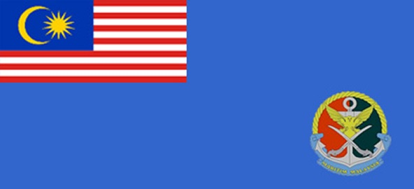
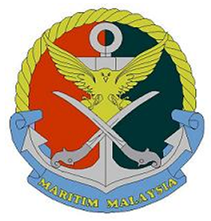

Logo dan Bendera


- Burung Helang melambangkan keadaan agensi yang sentiasa awas dengan penglihatan yang tajam dan kesiapsiagaan agensi yang sentiasa sedia untuk bertindak segera dalam membantu, menyelamat dan menguatkuasakan undang-undang negara di perairan Negara.
- Pedang Bugis melambangkan kepahlawanan dan kekuatan agensi seperti yang telah ditunjukkan oleh orang keturunan Bugis dalam sejarah Malaysia yang juga dikenali sebagai pelaut termasyhur di rantau ini.
- Lambang sauh melambangkan bahawa aktiviti utama agensi ini adalah berkaitan dengan penugasan di perairan Negara.
- Perkataan MARITIM MALAYSIA ditempatkan di dalam scroll yang membawa makna bahawa agensi ini adalah satu organisasi yang terdiri daripada anggota yang terlatih dan professional.
- Bentuk tali jut, tali ini yang membentuk bulatan melambangkan kekuatan ikatan perpaduan dan kekukuhan perhubungan antara semua pangkat dan peringkat dalam agensi ini.
- Warna merah melambangkan semangat waja pegawai agensi dalam menjalankan tugas.
- Warna biru melambangkan keutuhan rohani pegawai agensi dan sifat cintakan laut.